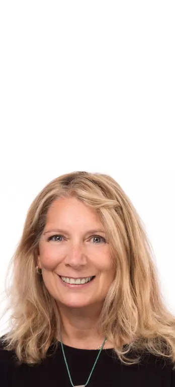

Welcome
I’m Maureen Levy, an IACP accredited counsellor and psychotherapist dedicated to providing a safe and supportive space for individuals and couples to explore challenges, foster self-discovery, and cultivate well-being.
I offer a range of therapeutic services tailored to meet your unique needs.